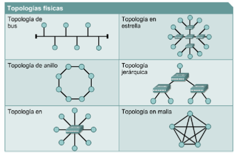

Topología Física de Red
La topología de red define la estructura de una red. Una parte de la definición topológica es la topología física, que es la disposición real de los cables o medios.

- Una topología de bus usa un solo cable backbone que debe terminarse en ambos extremos. Todos los hosts se conectan directamente a este backbone.
- La topología de anillo conecta un host con el siguiente y al último host con el primero. Esto crea un anillo físico de cable.
- La topología en estrella conecta todos los cables con un punto central de concentración.
- Una topología en estrella extendida conecta estrellas individuales entre sí mediante la conexión de hubs o switches. Esta topología puede extender el alcance y la cobertura de la red.
- Una topología jerárquica es similar a una estrella extendida. Pero en lugar de conectar los hubs o switches entre sí, el sistema se conecta con un computador que controla el tráfico de la topología.
- La topología de malla se implementa para proporcionar la mayor protección posible para evitar una interrupción del servicio. Como se puede observar en el gráfico, cada host tiene sus propias conexiones con los demás hosts. Aunque la Internet cuenta con múltiples rutas hacia cualquier ubicación, no adopta la topología de malla completa.
BÚSQUEDAS RELACIONADAS
Dispositivos de red (intermediarios)
Protocolos de Red